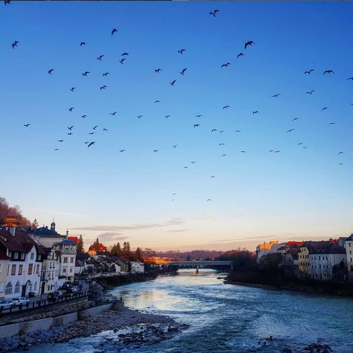

Neste site irei falar um pouco sobre o foto que eu tirei que eu mais gosto
Esta é a foto:
Esta foto foi tirada durante meu intercambio na Áustria, foi em um dia frio de inverno que eu estava voltando do supermercado após fazer minhas compras semanais, ao passar em cima da ponte eu vi alguns pássaros se aproximarem no ceu e tirei a foto
Porque eu gosto tanto desta imagem:
Eu postei esta foto no meu instagram, pode ser acessado no link a seguir:
Clique aqui para ver a fotoNesse instagram voce pode encontrar tambem